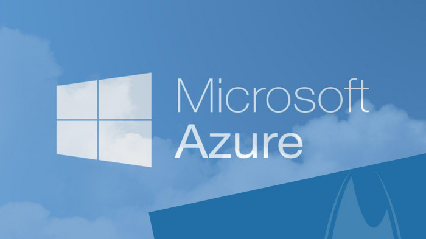

Cloud computing is a popular term used to describe the delivery of hosted services over the internet. These services are categorized into three main types of cloud computing, namely infrastructure as a service (IaaS), platform as a service (PaaS), and software as a service (SaaS). A cloud service can be either private or public. A public cloud provides services to anyone on the internet, while a private cloud is a dedicated data center that offers hosted services to a limited number of individuals with specific access and authorization settings. Regardless of whether it is private or public, the primary goal of cloud computing is to provide convenient, scalable access to computing resources and IT services.
Top Cloud Computing Platforms
1.) Microsoft Azure

Azure has known and recognized as one of the highest and popular cloud services platforms, given to Microsoft's broad suite of services. The comprehensive catalogue of proposed services is adequate to meet the requirements of every company in every region.You may handle services on the cloud or mix them with any of your standard infrastructures using Azure. Microsoft Azure was first released in 2010, and it has following shown to be a dependable result for businesses trying to digitally transit.
Amazon Web Services
AWS is a well-known cloud computing platform that is widely used for developing interactive web applications for businesses. It provides various Infrastructure-as-a-Service and Platform-as-a-Service options, including Elastic Cloud Compute , Elastic Beanstalk, Simple Storage Service , and Relational Database Service. One of the key benefits of AWS is its highly flexible architecture, which enables users to optimize their expenses by using only the required services.
Google Cloud
Google Cloud is a reliable, easy-to-use, and secure cloud computing solution offered by one of the most influential IT companies worldwide. While Google Cloud's range of services is not as broad as that of Azure, it is still capable of fulfilling all of your Infrastructure-as-a-Service (IaaS) and Platform-as-a-Service (PaaS) needs. Some of its notable features are its user-friendliness and robust security measures.
Cloud Linux
If you prefer to construct your own IT infrastructure rather than depending on a third-party service, CloudLinux is an excellent choice. It's not just another cloud provider; it's a cloud platform that enables you to set up your own infrastructure. As its name suggests, CloudLinux is a Linux-based operating system. While working with CloudLinux can be challenging, it also offers several benefits, such as complete control, flexibility, security, and extensive customization options.